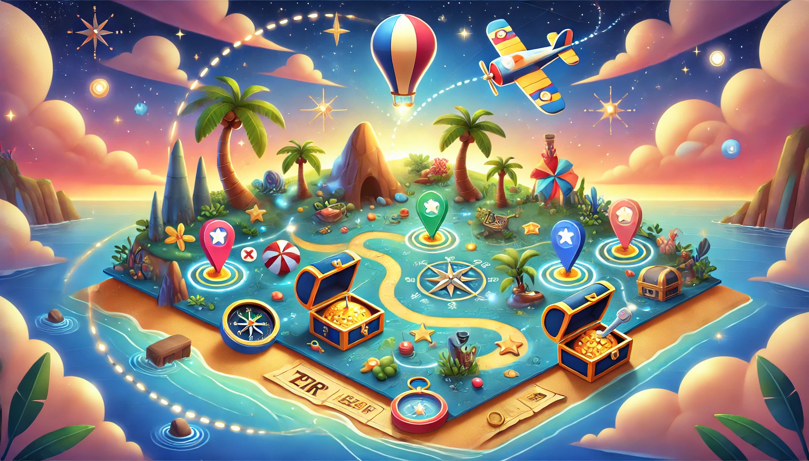

Bu oyunda, karakterlerimiz Güneş ve Doruk'un gizemli bir hazineyi arama macerasına katılacaksınız. AR teknolojisini kullanarak dünyayı keşfedin ve sırları açığa çıkarın!
Hayal Gücüne Yolculuk: Çocuklar İçin Eğlenceli ve Öğretici Bir AR Oyunu! "Hazine Avı" adlı artırılmış gerçeklik oyunumuz, çocuklara hem eğlenceli bir macera sunmayı hem de matematiksel beceriler kazandırmayı hedefliyor.
Siz de çocukların hayal gücünü harekete geçirirken onlara matematiği sevdirmek istiyorsanız, "Hazine Avı" oyununu denemeye hazır olun!
Daha Fazlasını Keşfet